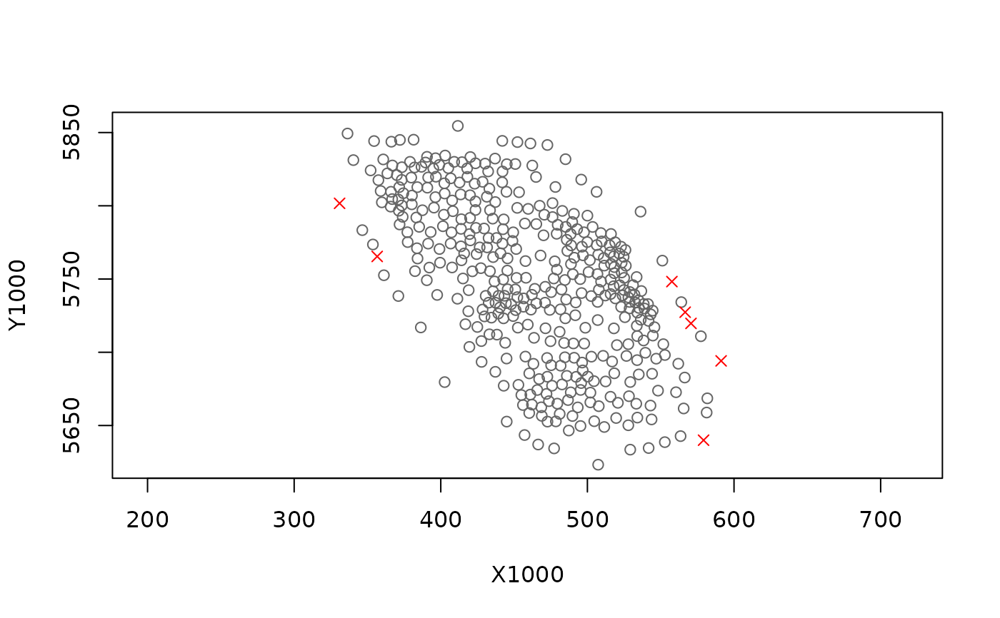
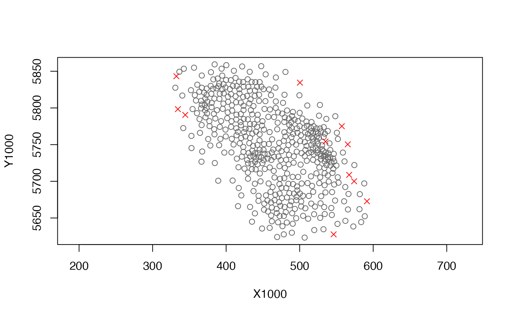

Transform a mesh object into a mesh with correlation barriers
Usage
add_barrier_mesh(
spde_obj,
barrier_sf,
range_fraction = 0.2,
proj_scaling = 1,
plot = FALSE
)Arguments
- spde_obj
Output from
make_mesh().- barrier_sf
An sf object with polygons defining the barriers. For example, a coastline dataset for ocean data. Note that this object must have the same projection as the data used to generate the x and y columns in
spde_obj.- range_fraction
The fraction of the spatial range that barrier triangles have.
- proj_scaling
If
spde_objwas created with scaling of the coordinates after the projection (e.g., dividing UTMs by 1000 so the spatial range is on a reasonable scale) the x and y values inspde_objare multiplied by this scaling factor before applying the projection frombarrier_sf.- plot
Logical.
Value
A list similar to make_mesh() but with spde_barrier and a
couple other helper list elements added.
If plot = TRUE, then a basic plot will be created as a side effect. Each
grey dot represents the center of a "normal" mesh triangle. Each red cross
represents the center of a "barrier" mesh triangle.
References
Bakka, H., Vanhatalo, J., Illian, J., Simpson, D., and Rue, H. 2019. Non-stationary Gaussian models with physical barriers. https://arxiv.org/abs/1608.03787
Examples
if (require("sf", quietly = TRUE) &&
require("ggplot2", quietly = TRUE) &&
require("dplyr", quietly = TRUE) &&
require("INLA", quietly = TRUE)) {
# First, download coastline data for our region.
# We will use `bc_coast` from the package data,
# but you can recreate it with the following.
# For applied situations on finer scales, you may with to use scale = "large".
# For that, first: remotes::install_github("ropensci/rnaturalearthhires")
# map_data <- rnaturalearth::ne_countries(
# scale = "medium",
# returnclass = "sf", country = "canada")
#
# # Crop the polygon for plotting and efficiency:
# st_bbox(map_data)
# bc_coast <- suppressWarnings(suppressMessages(
# st_crop(map_data,
# c(xmin = -134, ymin = 46, xmax = -120, ymax = 57))))
crs_utm9 <- 3156 # Pick a projection, here UTM9
st_crs(bc_coast) <- 4326 # 'WGS84'; necessary on some installs
bc_coast <- st_transform(bc_coast, crs_utm9)
# Project our survey data coordinates:
survey <- pcod %>% select(lon, lat, density) %>%
st_as_sf(crs = 4326, coords = c("lon", "lat")) %>%
st_transform(crs_utm9)
# Plot our coast and survey data:
ggplot(bc_coast) +
geom_sf() +
geom_sf(data = survey, size = 0.5)
# Note that a barrier mesh won't do much here for this
# example data set, but we nonetheless use it as an example.
# Prepare for making the mesh
# First, we will extract the coordinates:
surv_utm_coords <- st_coordinates(survey)
# Then we will scale coordinates to km so the range parameter
# is on a reasonable scale for estimation:
pcod$X1000 <- surv_utm_coords[,1] / 1000
pcod$Y1000 <- surv_utm_coords[,2] / 1000
spde <- make_mesh(pcod, xy_cols = c("X1000", "Y1000"),
n_knots = 200, type = "kmeans")
plot(spde)
# Add on the barrier mesh component:
bspde <- add_barrier_mesh(
spde, bc_coast, range_fraction = 0.1,
proj_scaling = 1000, plot = TRUE
)
# In the above, the grey dots are the centre of triangles that are in the
# ocean. The red crosses are centres of triangles that are over land. The
# spatial range will be assumed to be 0.1 (`range_fraction`) over land compared
# to over water.
# We can make a more advanced plot if we want:
mesh_df_water <- bspde$mesh_sf[bspde$normal_triangles, ]
mesh_df_land <- bspde$mesh_sf[bspde$barrier_triangles, ]
ggplot(bc_coast) +
geom_sf() +
geom_sf(data = mesh_df_water, size = 1, colour = "blue") +
geom_sf(data = mesh_df_land, size = 1, colour = "green")
# Now, when we fit our model with the new mesh, it will automatically
# include a barrier structure in the spatial correlation:
fit <- sdmTMB(density ~ s(depth, k = 3), data = pcod, mesh = bspde,
family = tweedie(link = "log"))
fit
}
#> Linking to GEOS 3.10.2, GDAL 3.4.1, PROJ 8.2.1; sf_use_s2() is TRUE
#>
#> Attaching package: ‘dplyr’
#> The following objects are masked from ‘package:stats’:
#>
#> filter, lag
#> The following objects are masked from ‘package:base’:
#>
#> intersect, setdiff, setequal, union
#> This is INLA_20.03.17 built 2022-12-15 23:47:33 UTC.
#> See www.r-inla.org/contact-us for how to get help.
#> To enable PARDISO sparse library; see inla.pardiso()
#> as(<dgCMatrix>, "dgTMatrix") is deprecated since Matrix 1.5-0; do as(., "TsparseMatrix") instead

#> Warning: 'giveCsparse' has been deprecated; setting 'repr = "T"' for you
#> Warning: 'giveCsparse' has been deprecated; setting 'repr = "T"' for you
#> Warning: 'giveCsparse' has been deprecated; setting 'repr = "T"' for you

#> Spatial model fit by ML ['sdmTMB']
#> Formula: density ~ s(depth, k = 3)
#> Mesh: bspde
#> Data: pcod
#> Family: tweedie(link = 'log')
#>
#> coef.est coef.se
#> (Intercept) 2.06 0.21
#> sdepth 4.09 0.30
#>
#> Smooth terms:
#> Std. Dev.
#> sds(depth) 60.2
#>
#> Dispersion parameter: 12.59
#> Tweedie p: 1.57
#> Matern range: 16.69
#> Spatial SD: 2.67
#> ML criterion at convergence: 6400.432
#>
#> See ?tidy.sdmTMB to extract these values as a data frame.